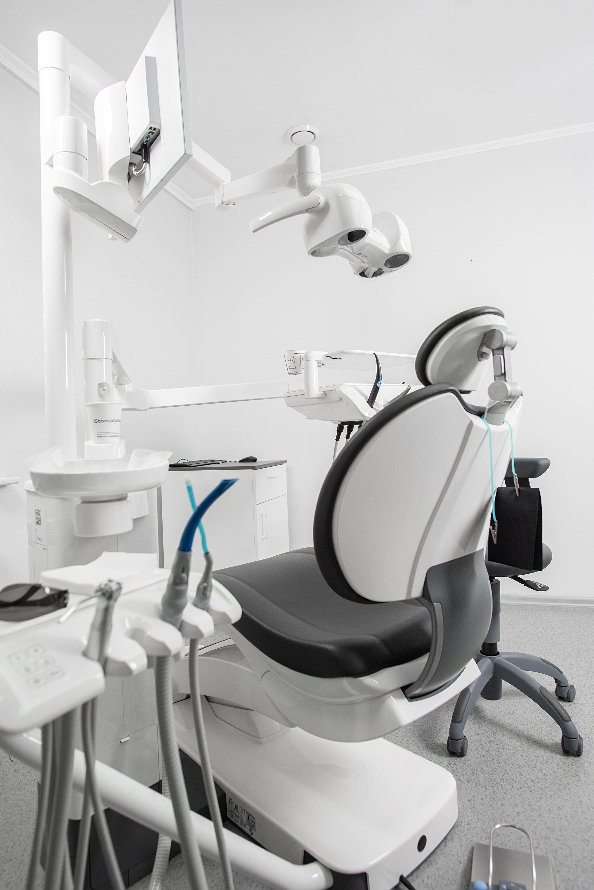
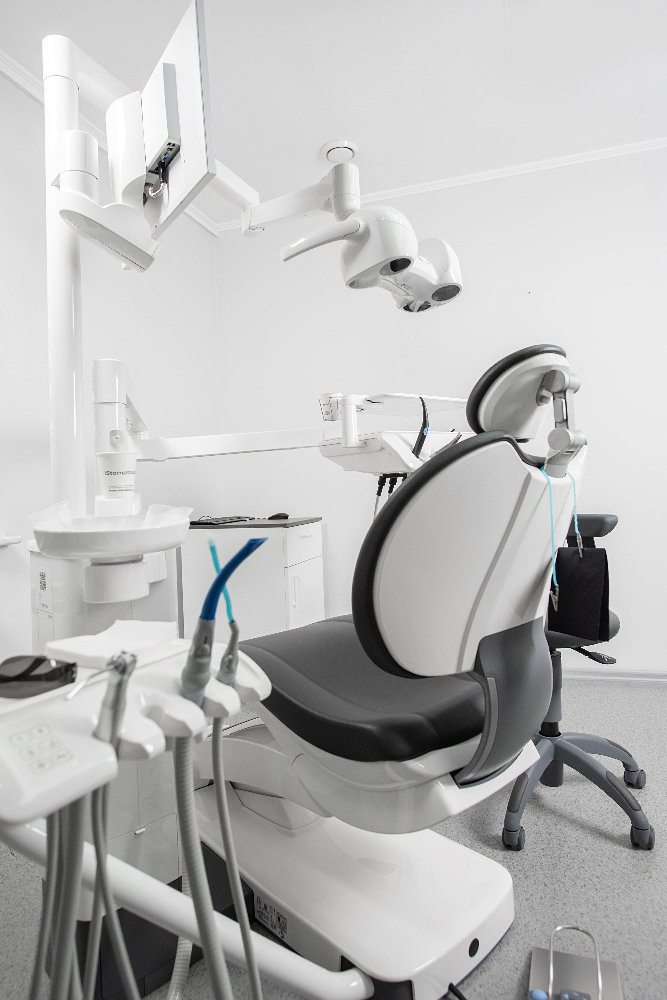

Nuestra Clinica
Abierta en 2006, la clínica Dental SMILE renueva a su plantilla para ofrecer todos los servicios de odontología de manera integral sin tener que desplazarse a otros centros
Nuestras instalaciones se actualiza en 2017 equipándose con la última tecnología en aparatología dental y en diagnóstico por imagen: radiología digital intraoral, radiología panorámica 2D, teleradiografía y TAC dental 3D (CBCT) Con una gran ilusión renovada y un equipo formado por personal altamente cualificado con mas de 10 años de experiencia en el sector, atenderemos de manera personalizada a cada uno de nuestros pacientes. Nuestro objetivo es el de cuidar su salud bucodental, consiguiendo que su paso por la clínica sea una experiencia agradable y sin dolor.